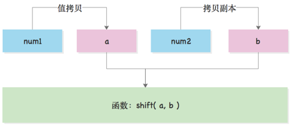
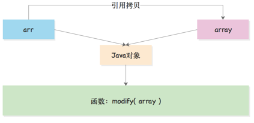
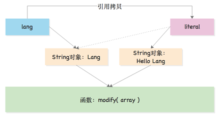

Java语言中的值传递
1. 数据类型基础
Java语言中的类型主要分为基本类型（8种）和引用类型。
- 基本类型：
byte, short, int, long, float, double, char, boolean - 引用数据类型：数组、类、接口、null（不指向任何对象）
而Java语言中的方法参数又包括：实际参数和形式参数。
- 形式参数：称为形参，定义方法时的参数，又称为方法定义中的参数。
- 实际参数：称为实参，具体写该调用方法时的参数。
根据传入的传递方式，Java中又包含两种：按值传递、按引用传递。
2. 值传递
先看一段代码来理解Java语言中的值传递：
package io.vertx.up.x;
public class X1PassByValue {
public static void main(final String[] args) {
final int num1 = 13;
final int num2 = 27;
shift(num1, num2);
System.out.println("num1 = " + num1);
System.out.println("num2 = " + num2);
}
private static void shift(int a, int b) {
final int temp = a;
a = b;
b = temp;
System.out.println("a = " + a);
System.out.println("b = " + b);
}
}运行上述代码会得到：
a = 27
b = 13
num1 = 13
num2 = 27仔细分析一下上边的结果：实际上num1和num2在作为函数shift的实参时，JVM会拷贝两个参数的副本，通过复制的方式将副本的值传给a, b，在这样的情况下，a, b和num1, num2相互独立，所以当函数内部交换了a, b的值时，原始的num1, num2两个值并没有被影响，不论函数内部如何修改，都不会影响到外部数据，这里的shift方法是无副作用的。
3. 引用传递
接下来看看按引用传递的代码：
package io.vertx.up.x;
public class X1PassedByRef {
public static void main(final String[] args) {
final int[] arr = {1, 2, 3, 4, 5};
output(arr);
modify(arr);
output(arr);
}
private static void output(final int[] array) {
for (final int item : array) {
System.out.print(item + ",");
}
System.out.println();
}
private static void modify(final int[] array) {
array[0] = 2;
array[2] = 5;
}
}运行上述代码输出为：
1,2,3,4,5,
2,2,5,4,5,从上述代码结果可以知道，modify函数是一个有副作用的函数，为什么？因为在调用了该函数过后，外部变量arr的内容被修改了，这种改变使得内存地址中的值产生了变化，假设有这样一个场景：如果写这个函数的Api是你的伙伴，而你调用了它写的Api，最终得到返回值过后，你的入参被改动了，而你需要在后续的代码中使用了arr，而这个时候，后续代码对这个函数的内部逻辑强关联（因为该函数会改动arr），这样的情况下，这些副作用有可能会影响主逻辑。
4. Java中的传递
最终不得不使用一张图来描述上边两段代码，该图需要读者具备JVM内存存储模型相关知识（读者可以先去理解栈和堆在JVM中的基础知识）。
按值传递

按引用传递

上边的图可以看到按值传递和引用传递的一个很大的区别，在Java语言中，调用函数时候，JVM会拷贝一个“副本”，不同的是基本类型是直接使用的栈拷贝（拷贝一份数据），而引用类型拷贝的是引用本身，而不是复制的对象（这是大部分读者最不能理解的拷贝），按引用传递实际上传递到函数内部的是“引用副本”，但是这个引用和原始引用指向的是同一个对象，所以使得函数内部对象若发生改变，那么这个传入对象就会被改变了。不过剧本也会发生一种例外，就是当你遇到了“不可变对象”（如Java中的String）。
5. 让人误解的String
很多时候讨论按引用传递，很多人往往会使用下边的例子来反驳：既然String在Java中是对象（引用类型），那么为什么当方法内部改变了String的时候，并没改动外围的值：
package io.vertx.up.x;
public class X1String {
public static void main(final String[] args) {
final String lang = "Lang";
System.out.println(lang);
process(lang);
System.out.println(lang);
}
private static void process(String literal) {
literal = "Hello " + literal;
System.out.println(literal);
}
}运行上述代码可以得到下边输出：
Lang
Hello Lang
Lang初学者面对这个可能有些困惑，按照Java中引用传递的规则，在literal = "Hello " + literal执行过后，很多人会觉得literal被改变了，实际上下边的图就可以说明一切了，也诠释了String是不可变对象：

实际上在函数调用时候，Java语言中依旧拷贝了引用本身，最初的literal是指向对象Lang的，但是由于Java语言中的String是“不可变”对象，也就是说literal = "Hello " + literal这句话执行后，JVM创建了一个新对象叫：Hello Lang，然后literal引用直接指向了新对象，原始对象并没有发生改变，而且lang依旧是指向了原始对象，所以最后打印出来的结果依然是：Lang，所以这种现象和Java语言中的按引用传递的概念并不冲突。Java语言中的不可变对象有一个明显的特征就是：任何在代码面你所看得见的改动，它都创建了新对象，并且使用你的引用指向该新对象，这也是不可变的含义。
6. 总结
到此处，差不多对于Java语言中的值传递和引用传递就有了一个扫尾了，对于读者而言，希望通过这样简单的阐述真正去理解Java语言中的函数形参、实参以及值传递和引用传递究竟是怎么玩的，至于“不可变”以及“内存模型”，在剧本的“支线剧情”一定会有相关阐述，大家拭目以待呗！